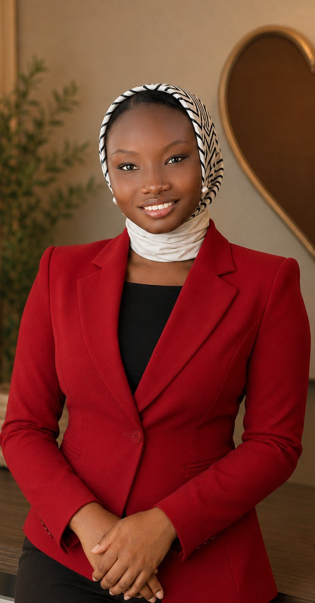

I'm Aisha Barka Abbas, a Nigerian content creator and Software Engineering student with a passion for sharing simple recipes, productivity, and everyday experiences. I enjoy creating content that inspires people to embrace creativity, learn new skills, and find joy in the little moments of daily life.
Beyond coding and content creation, I have a love for cooking, cozy aesthetics, and thoughtful storytelling. Whether I'm experimenting with a new recipe, documenting my study journey, or exploring creative ideas, I enjoy combining authenticity with a clean and welcoming style.
Through my work, I hope to connect with people who appreciate good food, continuous learning, and intentional living. My goal is to build meaningful digital experiences—both through software development and engaging content that informs, inspires, and brings a sense of comfort to others.